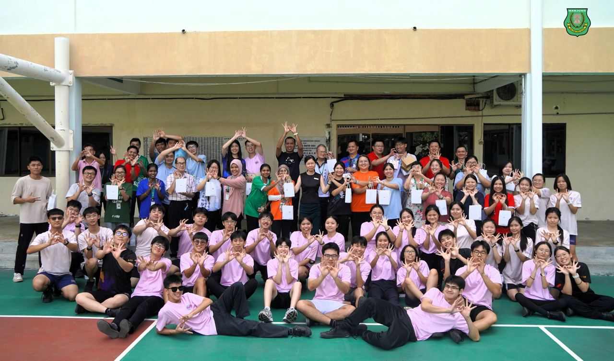
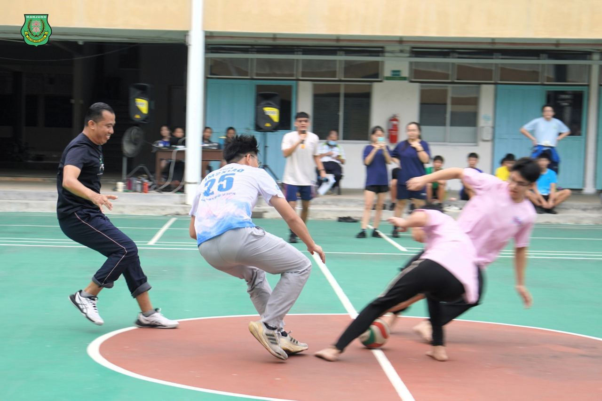
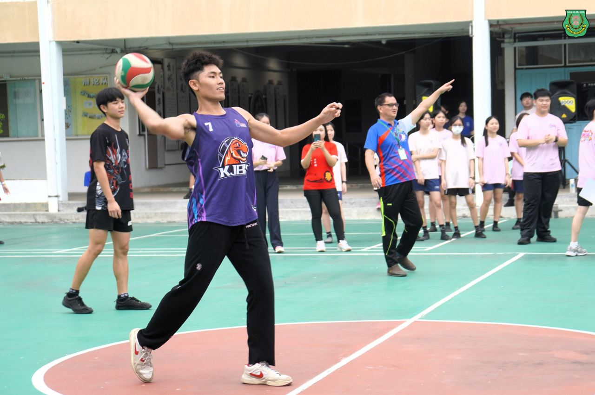
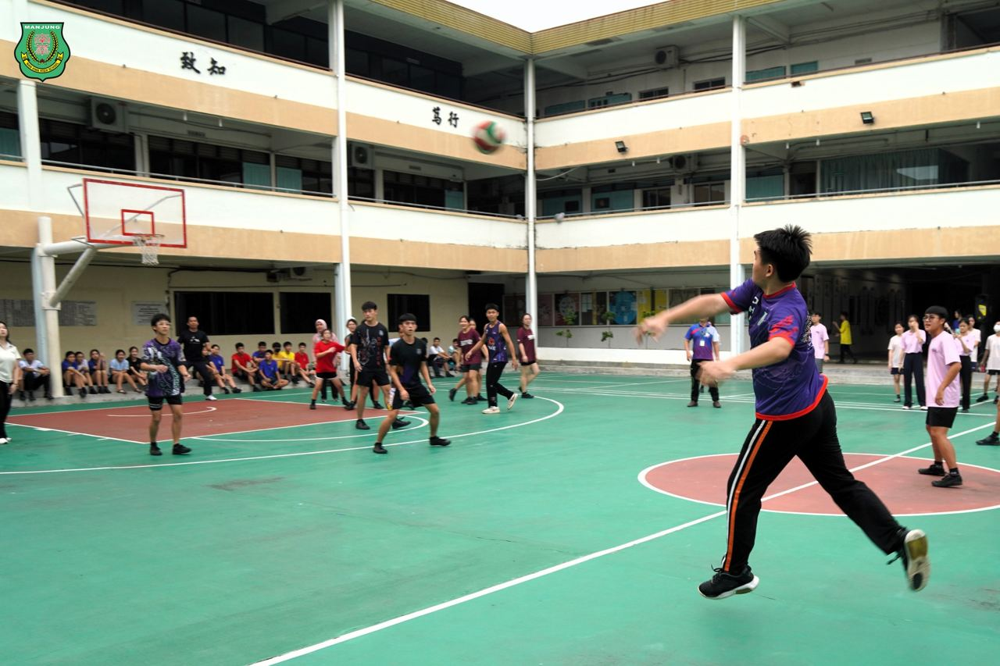
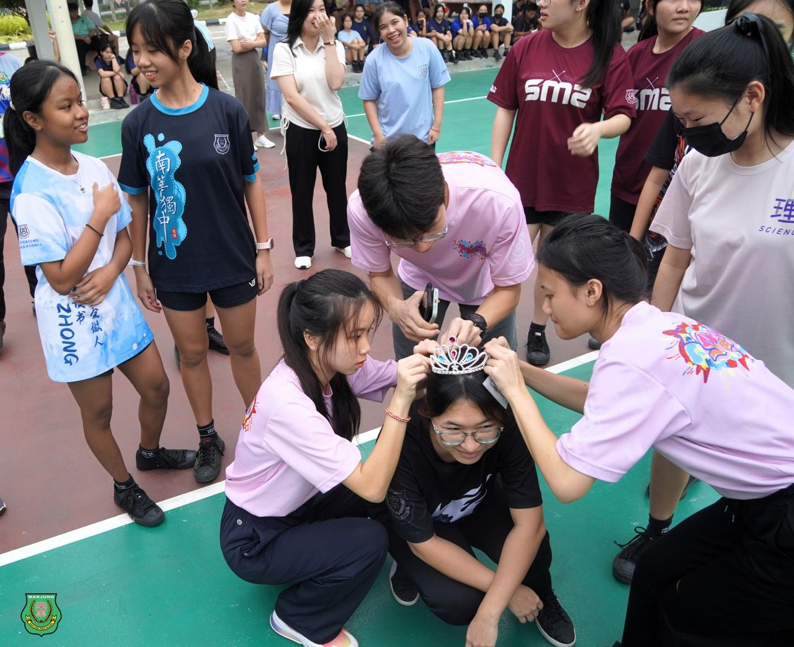
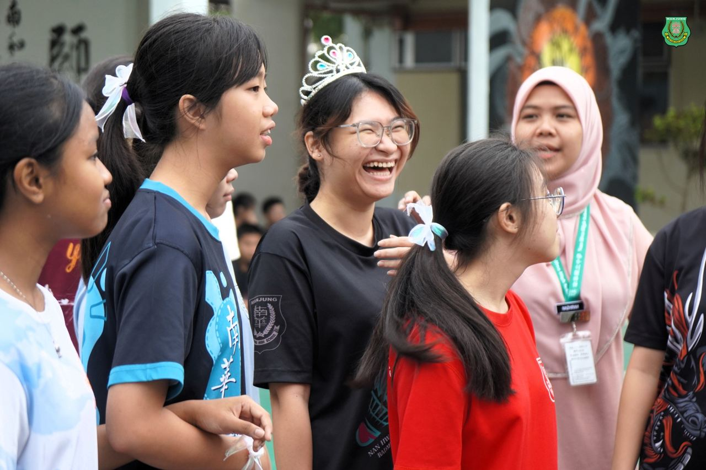
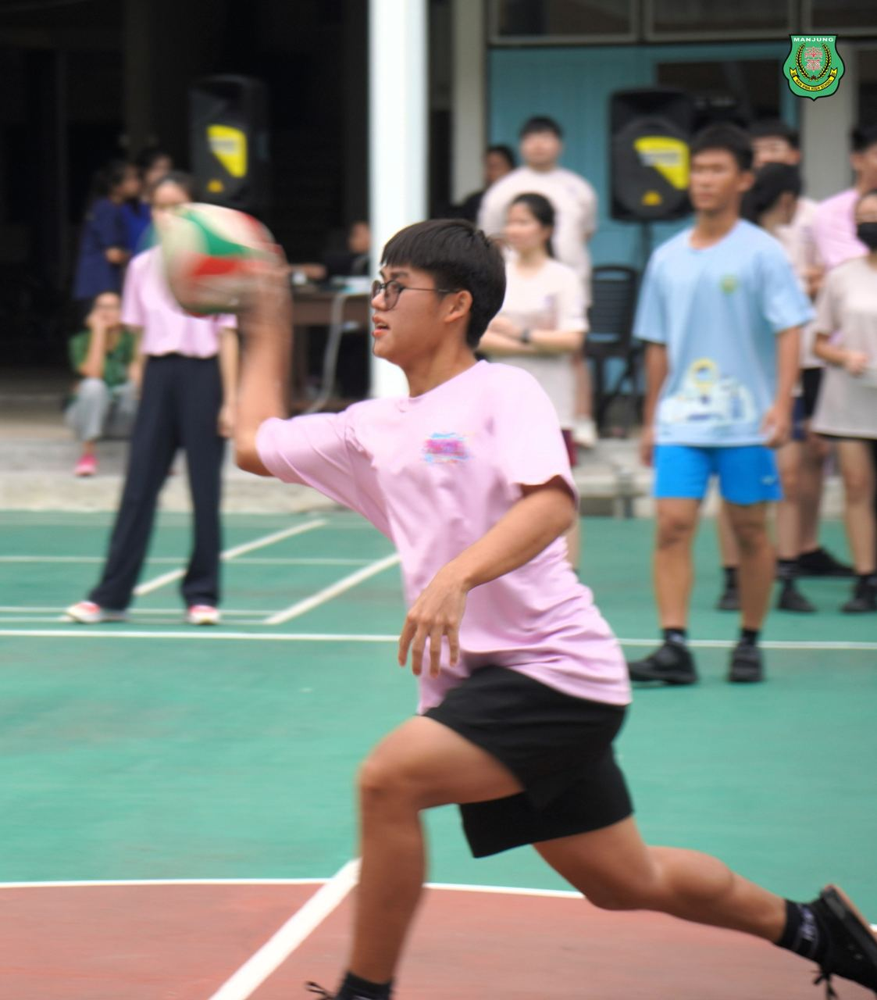
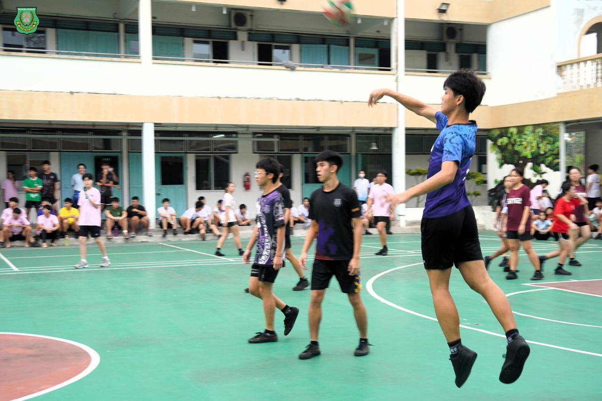

创意不失温馨教师节
创意不失温馨教师节
高三生包办活动策划
南华独中师生同乐增进情感
南华独中于日前举办教师节庆典，由本校高三筹委会精心策划了一系列富有创意且不失温馨的庆祝活动，向辛勤耕耘的教师们致以崇高敬意。这些活动不仅让师生共庆佳节，更透过娱乐性十足且感恩的活动宗旨，增进了师生彼此的情感。
活动亮点包括有“师生躲避球友谊赛”以及“"美食猎人·美食坊评选”。
师生联手组队进行躲避球比赛为教师节庆典拉开序幕，现场共分成四组，采取淘汰制，直至诞生冠军队伍为止。最终则是由全体教师对决高三学生，在现场师生热情邀请下，校长陈丽冰博士亲自上阵，加入高三学生的阵营，现场激烈的对抗与一来一回的拉扯将气氛烘托至顶点，欢声笑语不断，也将师生之间的感情紧密联系起来。
庆典下半部分是“美食猎人·美食坊评选”各班级精心准备了丰富多样的美食，包括素食和清真食品，教师摇身一变成了美食猎人，在进到各班班级时受到了热情如火及无微不至的招待。更有班级将课室布置成夜市摊贩，让教师凭实力套中自己的美食，让教师大呼过瘾。此享用美食的环节不仅展现了学生的烹饪才能，还增强了班级凝聚力，教师也感受到了学生们的热情，可谓一举多得。
高三筹委会主席张诗静同学表示："我们希望通过这些活动表达对老师的感恩之情，同时增进师生间的互动。看到老师们和同学们一起享受这个过程，全体高三生觉得所有的辛苦都值回票价。"
校长陈丽冰博士则是对学生们的创意和组织能力给予了高度评价。她说："学生们的用心令人感动。此次庆典不仅看见了师生打破了平时的隔阂，和乐融融、打成一片。体现了本校所倡导的‘有温度的教育’”。陈校长表示，南华独中师生之间的深厚情谊，是校园一抹亮色，为本校学习环境注入无限的活力。







